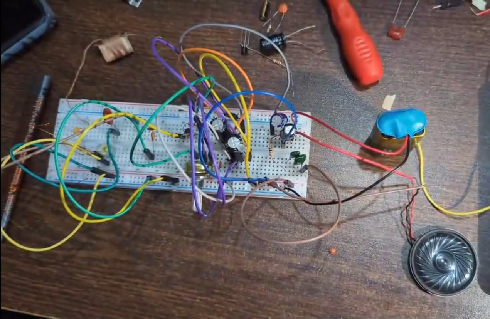
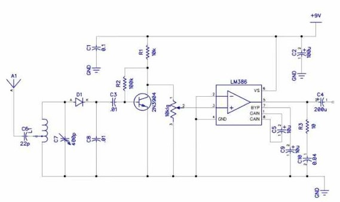

COMMUNICATION ENGINEERING / ANALOG ELECTRONICS
Design & Implementation of an AM Receiver
A practical analog communication project using LC tuning, diode detection, C828 transistor amplification and LM386 audio output.
AREA
Communication Engineering
TYPE
Analog AM Receiver
AM BAND
Approx. 530–1600 kHz
POWER
9 V Battery
01 / OVERVIEW
Project Overview
A practical analog AM receiver implementing RF selection, envelope detection, transistor amplification and LM386 audio output. The report describes operation across the standard AM broadcast band, approximately 530–1600 kHz.
02 / PROJECT MEDIA
Hardware, Circuit & Report


03 / COMPONENTS
Main Components
04 / TUNING
AM Band & Resonance
Frequency selection is achieved using an LC resonant network. The report targets a frequency near 1.2 MHz and calculates an inductance of about 44 µH with a variable capacitance around 400 pF.
The practical coil was implemented using approximately 60 turns on a ferrite core.
05 / ARCHITECTURE
Receiver Signal Chain
Antenna & RF Input
Captures incoming AM signals.
LC Tuning Network
Selects the desired RF component.
Diode Detector
Recovers the audio envelope.
C828 Amplifier
Amplifies the weak detected audio.
LM386 Stage
Provides audio power gain.
Speaker
Produces audible output.
06 / NOISE MITIGATION
Noise & Stability
Gain / Bypass Capacitors
Help control LM386 gain and reduce unwanted noise.
RC Output Network
Improves high-frequency stability.
Coupling Capacitors
Pass AC audio while blocking DC.
Physical Layout
Shorter, cleaner wiring can reduce interference.
07 / RESULTS
Testing & Results
- Complete receiver signal chain implemented on breadboard.
- LC network demonstrated tuning behavior.
- Detector and amplifier produced audible speaker output from received RF signals.
- Project provided practical experience with tuning sensitivity and analog troubleshooting.
08 / CHALLENGES
Practical Challenges
- Exact tuning near the target frequency was difficult because small L/C changes shifted resonance.
- Component tolerances reduced tuning accuracy.
- Environmental interference affected audio clarity.
- Breadboard wiring added parasitic effects.
- The receiver produced RF/audio output but did not achieve a perfectly stable lock at the target frequency.
09 / IMPROVEMENTS
Potential Improvements
- Use lower-tolerance components.
- Move to a PCB with shorter signal paths.
- Use an optimized AM antenna.
- Add stronger RF/audio filtering.